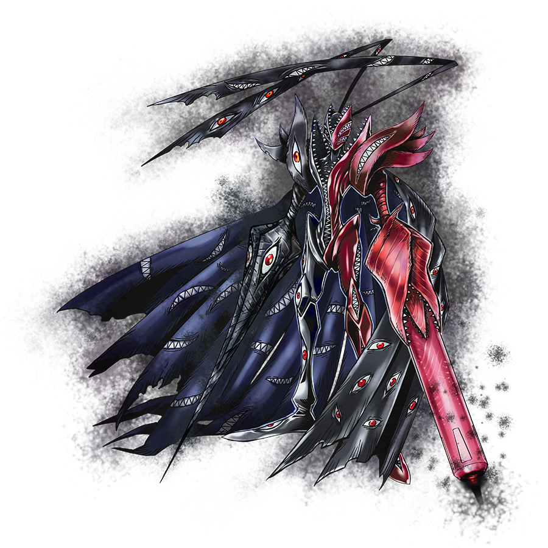

| Abbadomon Core | |||
|---|---|---|---|
|  | Level: Mega | Similar Digimons: | |
| Type: Unidentified | Abbadomon | ||
| Attribute: Unknown | Negamon | ||
| Attacks: |
|
||
| Bio | |||
| The main body that exists within Abbadomon, it is its true form. It seeks nothingness, prefers nothingness, and rejects everything except nothingness. After it turns everything into nothingness, it disappears itself, fulfilling its purpose. Its Special Move is making the energy that it shoots from both of its hands stick to the enemy, corroding them, and gnawing away at their whole body (Eclipse None). In addition, it has "Bingerard", in which it transforms its right arm into a spear and pierces with it, and "Death Charge", in which it transforms its left arm into a gun barrel and fires energy shots. Also, its "Gaze Eraser", cursed beams fired from all of the eyes on its cape, is even more cursed than when it is performed by Abbadomon. |
|||